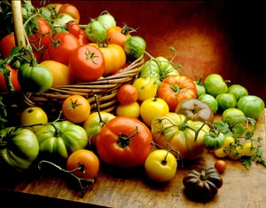

ANDREW UNANGST/FOTOLIA
Once you’ve had the juice of a perfectly ripe, just-picked, sun-warmed heirloom tomato running down your chin, we’ll bet a million bucks you’ll never enjoy a bland, mealy, grocery store “tomato” ever again!